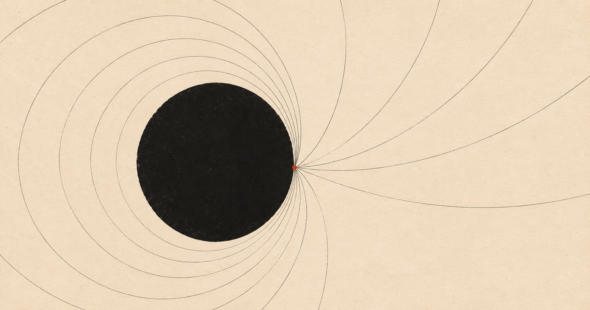

In Brave New World, Aldous Huxley dated his future from a car. The novel is set in A.F. 632, Anno Fordis, counted from 1908, when Ford’s Model T went into production. Characters swear “Ford!” where we would say “God,” and the cross has been trimmed into a T. It’s a joke, but also an argument: a civilization organized around mass production will eventually date itself by it.
We’re in a similar position, and we haven’t chosen our year zero.
The candidates are easy to list. Turing’s 1950 paper[1] asked whether machines can think. The 1956 Dartmouth workshop gave the field its name. ChatGPT, in November 2022, is the answer most people would give, because that’s when AI became something your parents used. Each has a flaw. Turing and Dartmouth marked when people started asking, not when the answers started arriving. ChatGPT is a product launch, and dating an era from a product is like dating the Industrial Revolution from the first railway timetable.
So I propose June 2017, when a team at Google published “Attention Is All You Need”[2] and introduced the transformer. Much of what we now call AI descends from that architecture: chatbots, image generators, coding assistants. ChatGPT was the moment the world noticed. The paper was the moment it became possible.
Call the era A.A., After Attention. By that count, today is A.A. 9.
Three reasons I like it.
It marks a real discontinuity. Before the transformer, language models existed but scaled badly. After that, scaling became the strategy. Much of what has happened since is the same idea with more compute.
The name has a pun built in. Attention is the mechanism inside the model, and attention is also what the economy around it harvests. A calendar that quietly links the two is doing the kind of work Huxley’s did.
It comes with a liturgy. The paper’s title is already a slogan, and “for Attention’s sake” works as a mild curse the way “for Ford’s sake” does in the novel.
Now the objections. A.A. also stands for Alcoholics Anonymous, which I consider a feature. Nobody promised the future would be tidy.
Someone will point out that attention mechanisms predate 2017. Bahdanau and colleagues used them in machine translation in 2014.[3] That’s true, but their version was bolted onto recurrent networks. The 2017 paper made attention the whole architecture, and that’s the step the rest of the field followed.
Someone else will say any anchor is arbitrary. Of course. A.F. was arbitrary too. A calendar doesn’t have to be correct, only shared, and it should make you notice what a society is built around.
That last point is why I’d like this to catch on, even as a running joke. Dating our era from a paper instead of a product or a person says something true: the thing that changed the world was an idea, written down, published openly, and then scaled by everyone with a data center.
So: A.A. 9. The year of Our Attention.
Nine years in, and its getting more wierder and exciting than we all thought.
PS : Credit to @Dhruv Trehan for suggesting the idea of an AI-age calendar, when we were having one of our usual off-manifold conversations in b/w our research at lossfunk on 5th November 2026.
Footnotes
[1] Alan M. Turing (1950). Computing Machinery and Intelligence. ↩
[2] Ashish Vaswani et al. (2017). Attention Is All You Need. ↩
[3] Dzmitry Bahdanau, Kyunghyun Cho, and Yoshua Bengio (2014). Neural Machine Translation by Jointly Learning to Align and Translate. ↩